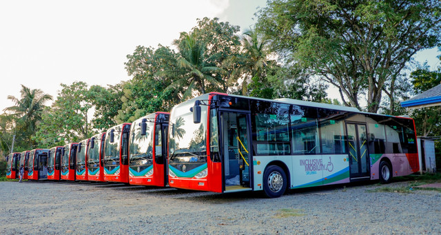

Coordinated hospital transport schedules and personalized nutritional meal planning based on specific medical conditions.
Cancer treatment is a marathon, not a sprint. Our Transport & Support module addresses the logistical and nutritional challenges patients face, ensuring they can physically get to the hospital and are properly nourished during their treatment cycles.
By removing the logistical burden of travel and ensuring proper nutrition, patients can focus entirely on their recovery. This holistic approach to care significantly improves the overall quality of life during treatment.